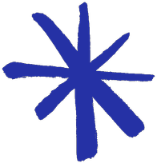
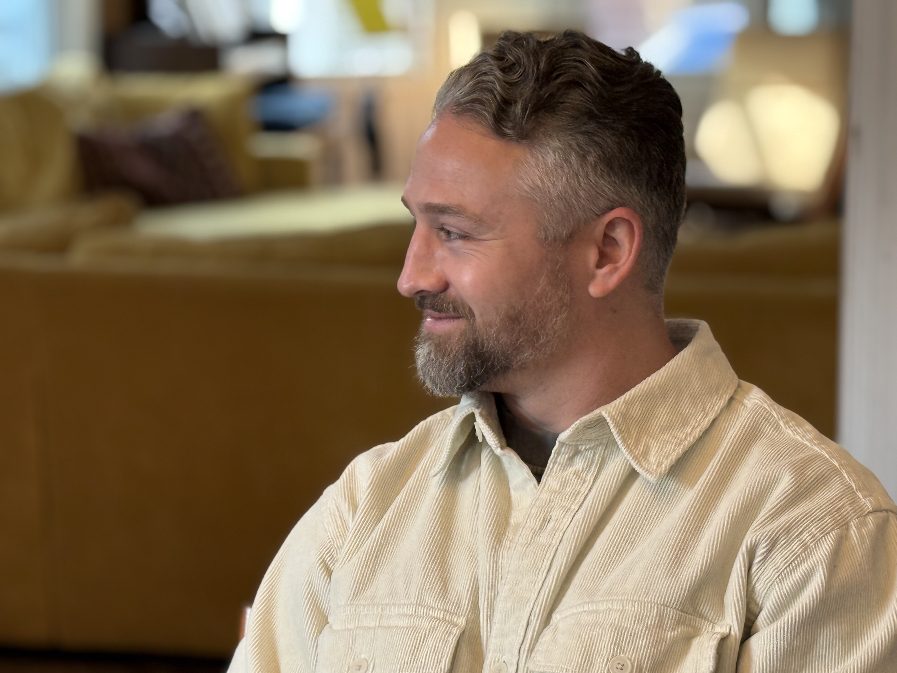
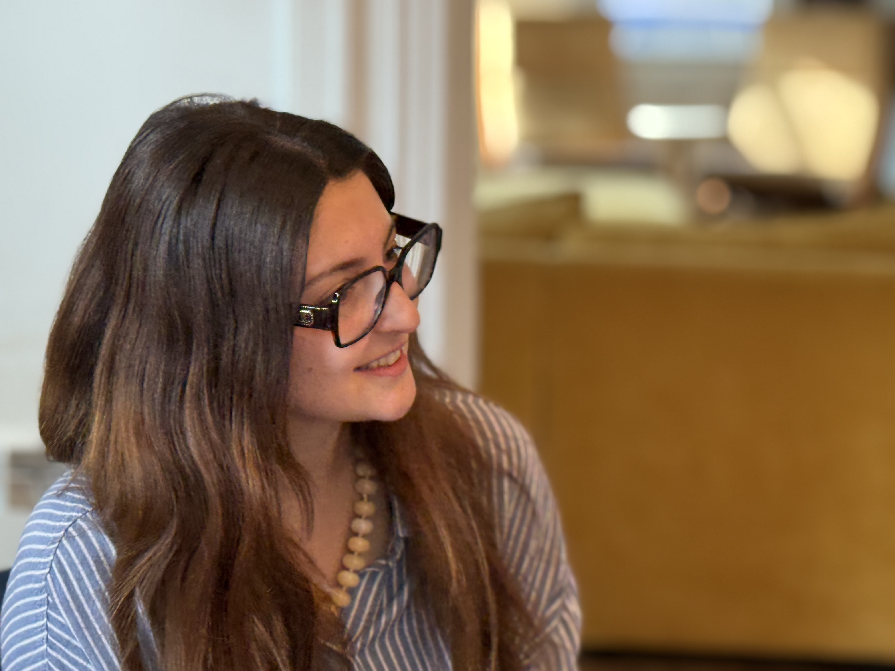

Layout Patterns
The larger, expressive layout patterns of the brand — the signature ways type, imagery, and motion come together on a page. (UI components live on the Components page.)
The signature hero move: a big League Spartan headline in cream, centered low over a full-width photo, with a soft shadow so it clears the image underneath. Used for the homepage hero (“Leadership is hard. Let’s work on it.”) and the site’s Open Graph share image. Reserve it for a short, declarative line over a photo with calm midtones in the lower third — never body copy, never over a busy area.

Leadership is hard.
Let’s work on it.
| Type | League Spartan 700, clamp(34–92px) / 1.0, tracking −0.02em |
| Color | Cream (#F9F8F2) — reversed out, never a brand hue |
| Legibility | Text-shadow 0 2px 26px rgba(0,0,0,.34) + 0 1px 4px rgba(0,0,0,.28); place over calm midtones, not a busy area |
| Placement | Absolute, centered, sitting low (top: ~72%); drops to ~62% and shrinks on mobile |
| Use for | Homepage hero & OG share image — one short declarative line only |
The largest heading in the system — an uppercase League Spartan display line that opens service pages and major features. It’s always paired with a Lora italic subhead and a League Spartan “deck” paragraph, so the three weights (bold caps → italic serif → regular sans) create the brand’s signature vertical rhythm.
Leadership Coaching
that Builds Mindset and Capacity
Coaching is a structured, relational partnership that creates space for leaders to reflect, experiment, and grow in real time.
| Heading | League Spartan 700, UPPERCASE, clamp(40–82px) / 1.0, tracking −0.01em |
| Subhead | Lora italic 400, clamp(19–29px) / 1.3 — often sentence-case, leads with “that…” |
| Deck | League Spartan 400 (the .lede-thin role), clamp(20–26px) / 1.42 |
| Reversed | On dark surfaces the heading flips to Steady Blue / cream per the reversed-headline rule |
Large watercolor spots and looping scribbles positioned to crop off the page edges — a colored blob peeking in from one side, a scribble tail escaping the other. They add hand-made warmth and depth without competing with the content, which always sits above them. Purely decorative: pointer-events:none, behind the text, and shrunk or dropped on mobile.


Leadership is hard. You don’t have to figure it out alone.
The spot bleeds in from the lower left; the scribble escapes off the upper right. Together they frame the message without ever touching it.
| Container | position:relative + overflow:hidden (or overflow-x:clip) so decos crop at the edge |
| Deco layer | position:absolute, z-index:0, pointer-events:none; negative offsets push it off-edge |
| Spot | watercolor blob 360–640px, opacity 0.55–0.92; pick the colorway to match the page |
| Scribble | looping line 520–1128px; rotate / scaleX(-1) for a natural gesture |
| Content | always position:relative; z-index:1 — sits above the decoration |
| Mobile | shrink the spot and drop the scribble; never let a deco force horizontal scroll |
A signature editorial layout: blocks capped at ~two-thirds width, alternately hugged left then right, with the right block dropped down so the two stagger diagonally instead of stacking flush. The alternative to a centered single column — use it for an intro statement paired with a supporting list.
We help leaders and teams slow down, see what’s really happening, and move forward with clarity and care.
What we work on together
- Navigating tension on a team
- Leading through burnout
- Giving & receiving feedback
- Delegating effectively
- Managing up
- Building healthy team culture
.offset-left | max-width: 66%; hugs left (margin-right: auto) |
.offset-right | max-width: 66%; hugs right (margin-left: auto); dropped down margin-top: ~60px |
| Mobile ≤ 640px | both go full-width and stack; offsets reset to 0, the drop shrinks to ~32px |
One testimonial at a time, advanced with circular prev/next arrows and a row of dots. Used on the homepage to let voices breathe instead of stacking a wall of quotes. The single-slide focus keeps each voice weighty; the controls read as hand-placed, not utilitarian.
They helped our leadership team slow down and actually hear each other. The change in how we work together has been night and day.

I came in skeptical about coaching. I left with a way of leading that finally feels like mine.
Facilitation that never felt like facilitation — just the most honest conversation our team has had in years.
| Quote mark | Lora italic 700, 90px, Radiant Gold — sits above the quote, centered |
| Quote | Lora italic, clamp(19–25px) / 1.42 |
| Attribution | Client headshot (56px circle) over name (League Spartan 700, 17px) + role (Inconsolata, 13px, uppercase, muted) |
| Arrow | 48px circle, 1.5px rule border, Steady Blue glyph; hover fills Steady Blue |
| Dots | 8px; inactive Grounded Black 22%; active Intentional Blue, scale 1.3 |
| Track | flex slides 0 0 100%; transform transition 420ms |
Three quote treatments for long-form (case studies, insights), distinct from the homepage carousel. Inline testimonials use a gold quotation mark; editorial pull quotes and key takeaways use the hand-drawn blue asterisk mark and outdent into the margin for emphasis.
“The time in our smaller team was really impactful. I realized that even in spaces I already lead, I can show up differently to make collaboration more intentional and visible.Program Director · National Nonprofit

| Inline quote | Gold “ mark (Lora italic 700, 64px) over Lora italic 22px; mono attribution |
| Pull quote | Blue hand-drawn asterisk to the left (rotated ±7–9°, alternating), Lora italic clamp(24–32px); outdents ~100–200px into the margin |
| Key takeaway | Pull quote + a “KEY TAKEAWAY” eyebrow (Inconsolata 12px, 0.16em, Intentional Blue); asterisk spans both rows |
A horizontally-scrolling deck of full-height cards that mixes formats — testimonial, full-bleed photo with caption, and a closing prompt — each in a different brand colorway. Snap-scrolls one card at a time with the same circular arrows as the quote carousel; used on case-study pages to string wins and voices into one browsable row.


| Card | Fixed height (~460–520px), 16px radius, soft shadow; flex:0 0 auto, snap-aligns to start |
| Colorways | Paper (bordered), Calm Blue, Steady Blue, Clean Slate — alternate so no two neighbors match |
| Testimonial | Gold quote mark (100px) → Lora italic 21–22px → 60px avatar + name + mono role |
| Photo card | Full-bleed cover image; bottom Steady-Blue gradient caption; League Spartan title + Lora/Calm-Blue sub |
| Track | Horizontal scroll-snap (x mandatory), scrollbar hidden, 20px gaps |
| Nav | Same circular arrows; disabled state at 0.32 opacity at the ends |
Native <details>/<summary> — no custom JS, inherently keyboard- and screen-reader-accessible. The standard for any expandable/FAQ UI. A + marker flips to – when open. (Try it — click a question.)
How is coaching different from consulting?
Consulting hands you answers; coaching builds your own capacity to find them. We partner with you to think more clearly and lead more intentionally — so the growth stays with you long after the engagement ends.
Do you work with whole teams, or just individual leaders?
Both. We coach individual leaders one-on-one, and we work with whole teams to strengthen how people work together over time.
How long is a typical engagement?
It depends on the goal — from a single facilitated session to an ongoing multi-month partnership. We’ll scope it together on a chemistry call.
| Markup | Native <details>/<summary> — accessible, no JS |
| Question | League Spartan 700, clamp(18–22px) / 1.25 |
| Answer | Lora 17px / 1.75, max-width ~68ch |
| Marker | + → –, Intentional Blue, top-right |
| Divider | 1px rule between items; no box per item |
A vertical timeline for mapping an engagement phase-by-phase. Lives on a dark surface (Clean Slate or Steady Blue) with a Calm-Blue connector line and gold “target” markers, so it reads as a considered roadmap rather than a plain list.
Mapping the journey
A full-cycle partnership, phase by phase.
Planning Phase
Program setup; development of shared goals.
Kickoff + Retreat
In-person or virtual team launch; begin 1:1 coaching.
Deepening Phase
Continued 1:1 coaching; midpoint team retreat.
Strong Close
Close-out retreat; transition sessions; final 1:1 coaching.
| Surface | Dark — Clean Slate or Steady Blue; type reverses to cream |
| Connector | 2px vertical line, Calm Blue at 35% |
| Marker | 16px gold dot, 3px surface-colored inner border + 2px gold outer ring (a “target”) |
| Date | Inconsolata 500, 12px, uppercase, 0.14em, Calm Blue |
| Phase title | League Spartan 700, 24px, cream |
| Body | Lora 16px / 1.6, cream at 85%, max-width ~480px |
For schedules, comparisons, and structured reference. Designed for a dark surface: a barely-there fill, Calm-Blue uppercase column headers, cream row-headers, and hairline Calm-Blue dividers. A row can be highlighted with a faint gold band, and secondary notes sit in a small gold Inconsolata line.
Two cohorts run the same arc on offset dates.
| Session | Cohort 1 | Cohort 2 |
|---|---|---|
| Launch | July 9 | Sep 2 |
| Training #1 | July 30 | Sep 16 |
| Coaching ×3 | Aug–Oct Opt-in | Oct Opt-in |
| Transition | November 5 | November 5 |
| Table | Full width, border-collapse, cream-4% fill, 1px Calm-Blue-28% border |
| Column head | League Spartan 600, 13px, uppercase, 0.1em, Calm Blue |
| Row head | League Spartan 600, 16px, cream, ~34% width (<th scope="row">) |
| Cells | Lora 16px, cream at 88%; hairline Calm-Blue-20% row dividers, none on last row |
| Highlight | Gold-10% row band; secondary note in Inconsolata 11px gold |